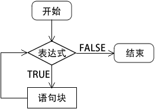
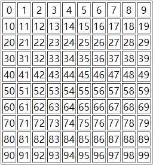

首页 > 编程笔记
PHP while和do while循环
循环语句可以在满足条件的情况下反复执行某一个操作。在 PHP 中提供了 4 个循环控制语句，分别是 while、do while、for 和 foreach 循环语句。本节我们主要介绍一下 while 和 do while 循环语句。
while 循环的语法格式如下：
while 循环的执行过程如下图所示：
while 循环中“表达式”的计算结果一定要是布尔型的 TRUE 或 FALSE，如果是其他类型的值也会自动转换为布尔类型的值。通常这个表达式是使用比较运算符或者逻辑运算符计算后的值。“语句块”是一条语句或一个复合语句（代码块）。当 while 循环语句中只有一条语句时可以将包裹代码块的大括号
【示例】使用 while 循环打印数字 1~10，代码如下所示：
do while 循环语句的格式如下：
do while 循环语句的执行流程如下图所示：

图：do while 循环执行流程
【示例】使用 do while 循环计算 1~50 之间整数的和。
1. while 循环
while 循环的作用是反复执行某一项操作，是循环语句中最简单的一个。该语句的特点是：先判断表达式，当表达式结果为真时执行相应的语句。while 循环的语法格式如下：
while (表达式) {
语句块;
}
while 循环的执行过程如下图所示：

图：while 循环执行流程
图：while 循环执行流程
while 循环中“表达式”的计算结果一定要是布尔型的 TRUE 或 FALSE，如果是其他类型的值也会自动转换为布尔类型的值。通常这个表达式是使用比较运算符或者逻辑运算符计算后的值。“语句块”是一条语句或一个复合语句（代码块）。当 while 循环语句中只有一条语句时可以将包裹代码块的大括号
{ }省略。如果是多条语句的代码块，则一定要使用大括号{ }包裹起来。【示例】使用 while 循环打印数字 1~10，代码如下所示：
<?php
$num = 1;
while($num <= 10) {
echo $num.($num == 10 ? '' : ', ');
$num++;
}
?>
运行结果如下：
1, 2, 3, 4, 5, 6, 7, 8, 9, 10
while 循环与 if 语句一样也可以多层嵌套在一起使用，比如我们可以使用两层嵌套的 while 循环输出一个表格，代码如下所示：
<?php
echo '<table border="1">';
$x = 0;
while ($x < 10) {
echo '<tr align="center">';
$y = 0;
while ($y < 10) {
echo '<td>'.($x*10+$y).'</td>';
$y++;
}
echo '</tr>';
$x++;
}
echo '</table>';
?>
运行结果如下图所示：

2. do while 循环
do while 和 while 循环非常相似，区别在于 do while 循环的表达式是在每次循环结束时检查而不是在开始时，而且不论表达式的结果如何 do while 循环语句都会执行一次，因为表达式的值是每次循环结束后才检查的。而在 while 循环中就不同了，表达式的值在循环开始时检查，如果一开始就为 FALSE，则整个循环立即终止。do while 循环语句的格式如下：
do {
语句块;
} while (表达式);
{ }。
注意：使用 do while 时最后一定要有一个分号;，分号也是 do while 循环语法的一部分。
do while 循环语句的执行流程如下图所示：
图：do while 循环执行流程
【示例】使用 do while 循环计算 1~50 之间整数的和。
<?php
$sum = 0;
$i = 1;
do {
$sum += $i;
$i++;
} while ($i <= 50);
echo '1 + 2 + 3 +...+ 49 + 50 = '. $sum;
?>
运行结果如下：
1 + 2 + 3 +...+ 49 + 50 = 1275
关注公众号「站长严长生」，在手机上阅读所有教程，随时随地都能学习。内含一款搜索神器，免费下载全网书籍和视频。

微信扫码关注公众号